Wrexham AFC · FC26 Career
Season 2026–27
The Hawk Era · Season 2026–27
Wrexham
AFC
AFC
Keevyon Jenkins · Head Coach · Premier League (promoted)

EFL Championship — Final Standings, 2025/26 (archived · Wrexham now in the Premier League)
| # | Club | P | W | D | L | GF | GA | GD | Pts |
|---|---|---|---|---|---|---|---|---|---|
| ★ CHAMPIONS — title won, promoted to the Premier League | |||||||||
| 1 | 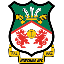 Wrexham ★ | 46 | 36 | 4 | 6 | 111 | 47 | +64 | 112 |
| ▲ Automatic Promotion | |||||||||
| 2 | 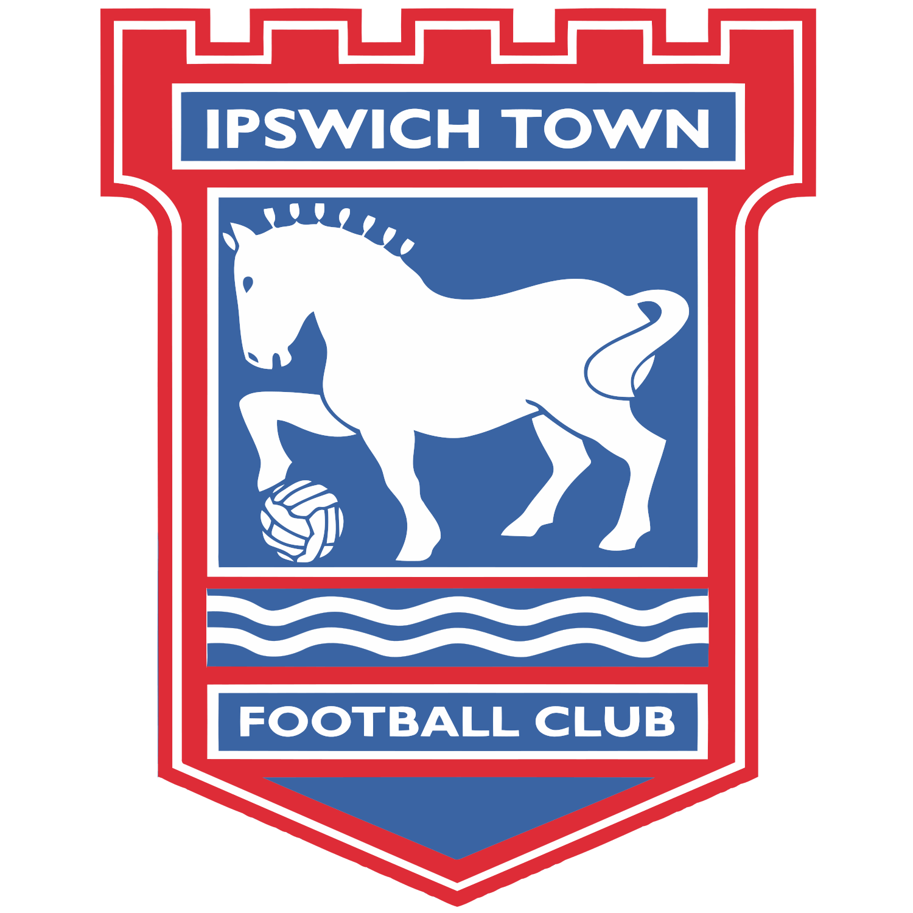 Ipswich | 46 | 22 | 15 | 9 | 65 | 42 | +23 | 81 |
| ↑ Promotion Play-offs · 3rd–6th | |||||||||
| 3 |  Swansea City | 46 | 21 | 16 | 9 | 61 | 42 | +19 | 79 |
| 4 | 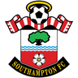 Southampton | 46 | 20 | 16 | 10 | 74 | 55 | +19 | 76 |
| 5 | 46 | 22 | 10 | 14 | 69 | 51 | +18 | 76 | |
| 6 | 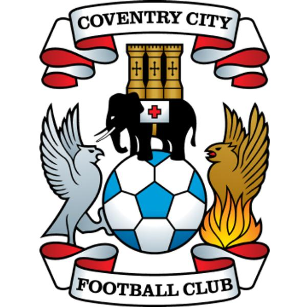 Coventry City | 46 | 19 | 18 | 9 | 69 | 53 | +16 | 75 |
| 7 | Hull City | 46 | 20 | 15 | 11 | 66 | 51 | +15 | 75 |
| 8 | 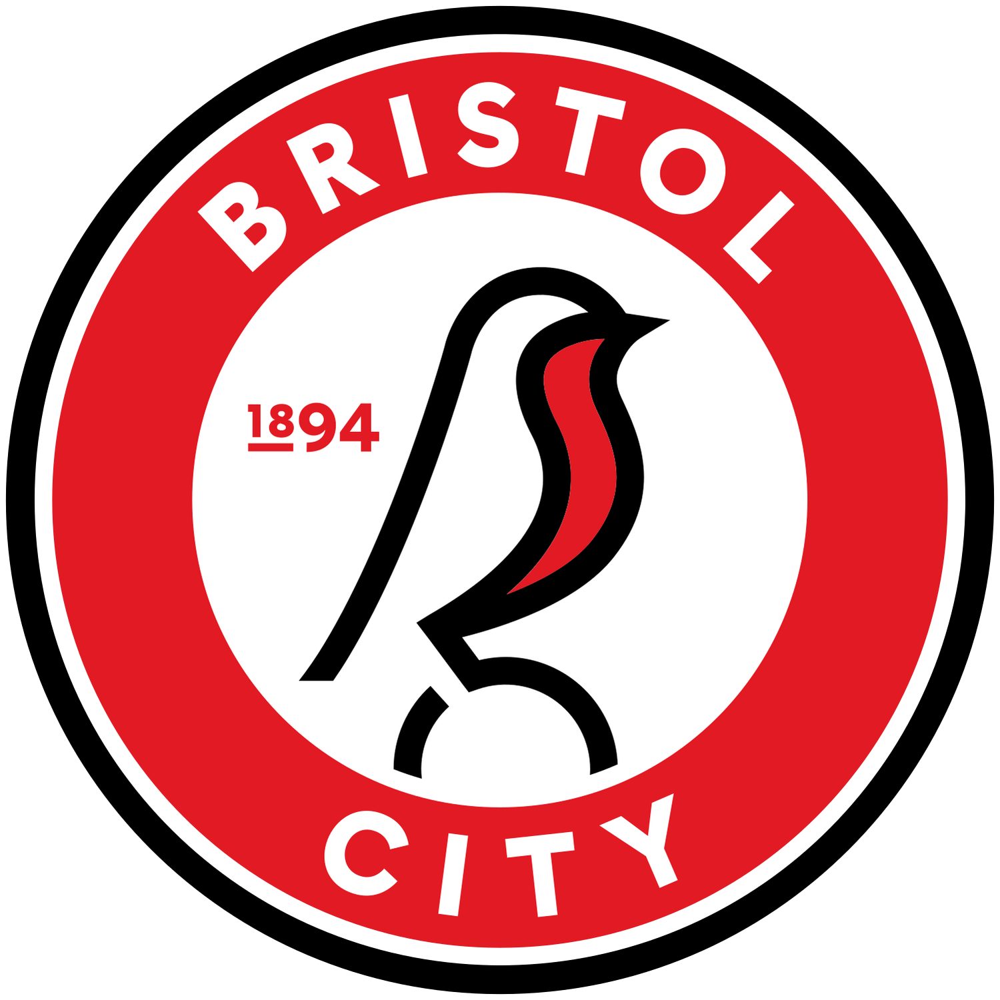 Bristol City | 46 | 18 | 18 | 10 | 62 | 52 | +10 | 72 |
| 9 | Leicester City | 46 | 18 | 17 | 11 | 67 | 54 | +13 | 71 |
| 10 | 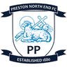 Preston | 46 | 17 | 17 | 12 | 65 | 54 | +11 | 68 |
| 11 |  Middlesbrough Middlesbrough | 46 | 16 | 19 | 11 | 58 | 56 | +2 | 67 |
| 12 | Millwall | 46 | 16 | 15 | 15 | 56 | 52 | +4 | 63 |
| 13 | Birmingham City | 46 | 15 | 15 | 16 | 57 | 56 | +1 | 60 |
| 14 | 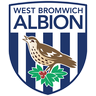 West Brom | 46 | 15 | 14 | 17 | 52 | 68 | -16 | 59 |
| 15 | 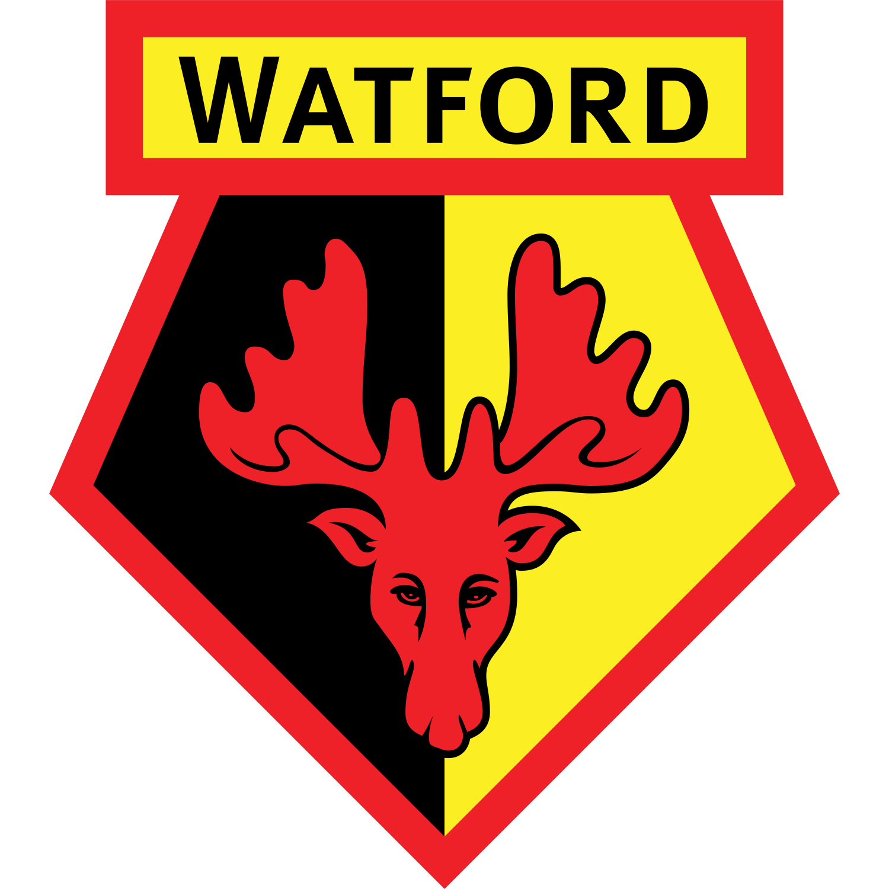 Watford | 46 | 12 | 17 | 17 | 47 | 49 | -2 | 53 |
| 16 | QPR | 46 | 13 | 13 | 20 | 49 | 62 | -13 | 52 |
| 17 | 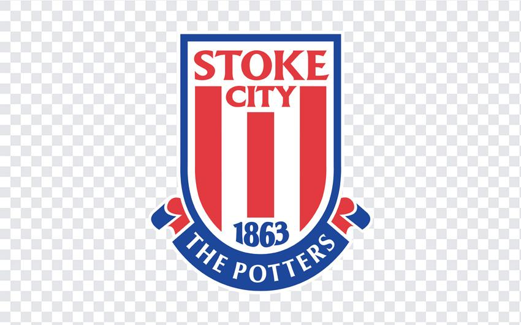 Stoke City | 46 | 12 | 15 | 19 | 44 | 53 | -9 | 51 |
| 18 | 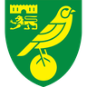 Norwich | 46 | 11 | 17 | 18 | 46 | 57 | -11 | 50 |
| 19 | 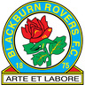 Blackburn Rovers | 46 | 9 | 18 | 19 | 48 | 68 | -20 | 45 |
| 20 | 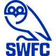 Sheffield Wed | 46 | 9 | 16 | 21 | 43 | 68 | -25 | 43 |
| 21 | 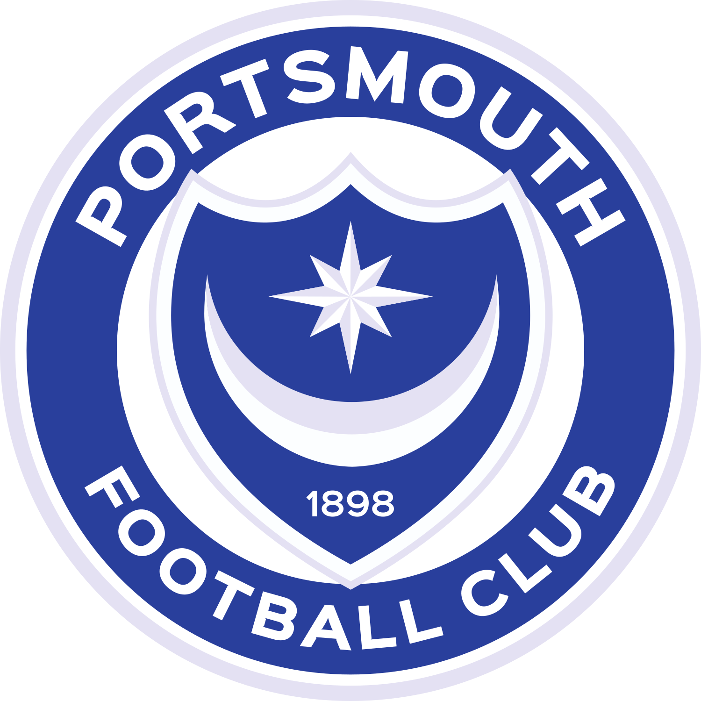 Portsmouth | 46 | 9 | 16 | 21 | 37 | 64 | -27 | 43 |
| ▼ Relegated | |||||||||
| 22 | Derby County | 46 | 7 | 20 | 19 | 42 | 61 | -19 | 41 |
| 23 | 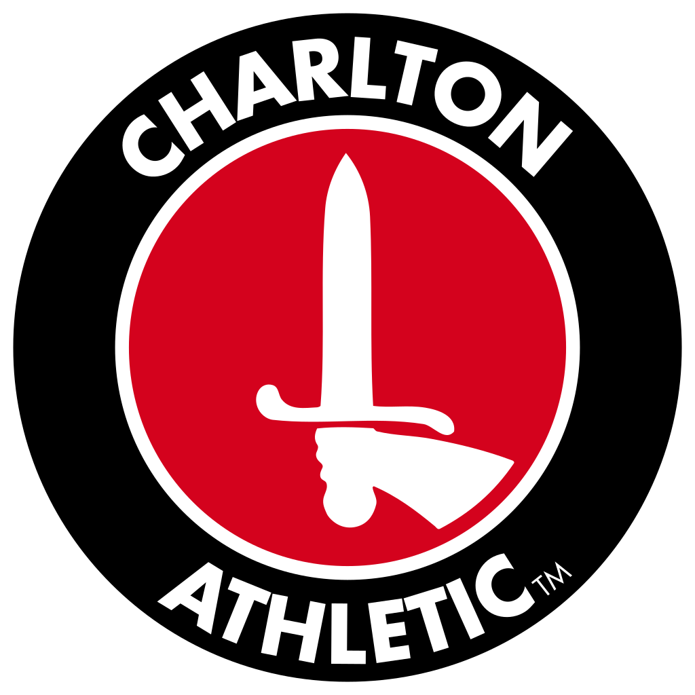 Charlton Ath | 46 | 9 | 11 | 26 | 43 | 72 | -29 | 38 |
| 24 | 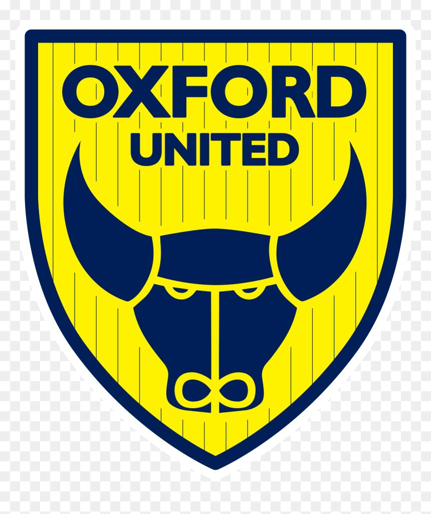 Oxford United | 46 | 5 | 10 | 31 | 40 | 84 | -44 | 25 |
Season Log
No entries yet — season begins with the first kick-off.